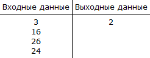

Информатика ОГЭ
Разбор задания №15
Это задание повышенной сложности, требует от сдающего знания: Алгоритмические конструкции. Логические значения, операции, выражения. Разбиение задачи на подзадачи, вспомогательный алгоритм. Обрабатываемые объекты: цепочки символов, числа, списки, деревья
И умение создавать и выполнять программы для заданного исполнителя (вариант задания 15.1) или на универсальном языке программирования (вариант задания 15.2).
Универсальный язык можно использовать любой, но в последующих примерах, будет использован Python
В задании 15.1 используется робот чертежник, и средство разработки КуМир
Мануал КуМир: manual.pdf
15.2:
Документация PythonДля исполнения кода Python, можно использовать наш Интерпретатор
Первая задача (15.1):
Исполнитель Робот умеет перемещаться по лабиринту, начерченному на плоскости, разбитой на клетки. Между соседними (по сторонам) клетками может стоять стена, через которую Робот пройти не может. У Робота есть девять команд. Четыре команды — это команды-приказы:
вверх вниз влево вправо
При выполнении любой из этих команд Робот перемещается на одну клетку соответственно:
Если Робот получит команду передвижения сквозь стену, то он разрушится. Также у Робота есть команда закрасить, при которой закрашивается клетка, в которой Робот находится в настоящий момент.
Ещё четыре команды — это команды проверки условий. Эти команды проверяют, свободен ли путь для Робота в каждом из четырёх возможных направлений:
сверху свободно снизу свободно слева свободно справа свободно
Эти команды можно использовать вместе с условием «если», имеющим следующий вид:
если условие то последовательность команд все
Здесь условие — одна из команд проверки условия. Последовательность команд — это одна или несколько любых команд-приказов.
если справа свободно то вправо закрасить все
В одном условии можно использовать несколько команд проверки условий, применяя логические связки и, или, не, например:
если (справа свободно) и (не снизу свободно) то вправо все
Для повторения последовательности команд можно использовать цикл «пока», имеющий следующий вид:
нц пока условие последовательность команд кц
Где кц — конец цикла, нц — начало цикла.
нц пока справа свободно вправо кц
Выполните задание:
На бесконечном поле есть горизонтальная и вертикальная стены. Правый конец горизонтальной стены соединён с нижним концом вертикальной стены. Длины стен неизвестны. В вертикальной стене есть ровно один проход, точное место прохода и его ширина неизвестны. Робот находится в клетке, расположенной непосредственно под горизонтальной стеной у её левого конца.
На рисунке указан один из возможных способов расположения стен и Робота (Робот обозначен буквой «Р»).


Алгоритм может быть выполнен в среде формального исполнителя или записан в текстовом редакторе. Сохраните алгоритм в текстовом файле.
Решение:
- Комментарии будем обозначать красным цветом:
Двигаемся вправо, пока не дойдем до края стены. нц пока не сверху свободно вправо кц Шаг вверх. вверх Двигаемся вверх, пока не дойдем до края стены, закрашивая клетки. нц пока не слева свободно закрасить вверх кц Двигаемся вверх, пока не дойдем до стены (слева). нц пока слева свободно вверх кц Двигаемся вверх, пока не дойдем до края стены, закрашивая клетки. нц пока не слева свободно закрасить вверх кц
Вторая задача (15.2):
Напишите программу, которая в последовательности натуральных чисел определяет количество чисел, кратных 4. Программа получает на вход количество чисел в последовательности, а затем сами числа. В последовательности всегда имеется число, кратное 4. Количество чисел не превышает 1000. Введённые числа не превышают 30 000. Программа должна вывести одно число — количество чисел, кратных 4.
Решение:
| Python |
|